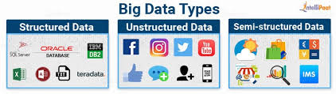

Now that we are on track with what is big data, let’s have a look at the forms of big data:
- Structured
By structured data, we mean data that can be processed, stored, and retrieved in a fixed format. It refers to highly organized information that can be readily and seamlessly stored and accessed from a database by simple search engine algorithms. For instance, the employee table in a company database will be structured as the employee details, their job positions, their salaries, etc., will be present in an organized manner.
- Unstructured
Unstructured data refers to the data that lacks any specific form or structure whatsoever. This makes it very difficult and time-consuming to process and analyze unstructured data. Email is an example of unstructured data.
- Semi-structured
Semi-structured data pertains to the data containing both the formats mentioned above, that is, structured and unstructured data. To be precise, it refers to the data that although has not been classified under a particular repository (database), yet contains vital information or tags that segregate individual elements within the data.
